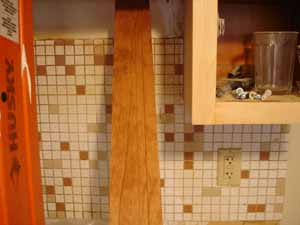

Kitchen update, cont. - the stain
Progress is being made, very slowly it seems to me, but progress none the less. I hadn’t expected the whole experience to be quite so disorienting (or disorientating, as the British would say). When I gave birth to my boys, all the books, classes, and advice I had listened to from friends and professionals went clean out of my mind and I turned into a sort of mute, suffering animal, in a zone inhabited only by me, and just waited out the pain. This isn’t unlike that experience except it is going on and on, and unfortunately I have to interact with other people from time to time. If I could just hole up in the guest bedroom (the only one with an air conditioner) with a stack of library books and some snacks for the next month and just wait until the whole thing is over I think I could bear it a lot better. It gets tense when I have to walk around the house and communicate with my family, and I’m overreacting to the least little problem in any other area of my life.

Anyway, the major construction is finished and the countertops have been measured for and ordered. The sub-flooring is down, whatever that is. They are finished sanding the cabinets and the rest of the woodwork and are ready to apply a stain. This photo is of the stain we are thinking of going with. What do you think of it, readers? It’s a light cherry, and would go well with the little terra-cotta tile in the tiled area of the walls, which I’m keeping. The tile extends about two feet above the countertops; I guess up to cabinet level. It seems a shame to sand the woodwork down to such a light shade and then stain it dark again, but the wood came out a little uneven in parts, and some of it is new, so the stain would even it up and make it all look richer. The trouble is, if I don’t like the dark stain, I’m stuck with it and all I could do at that point would be paint over it. If I sound like I have trouble making decisions, I do, especially decisions that I know I’ll have to live with for a long time. Funny thing is, I love telling other people what to do! Maybe I should pretend I’m another person and tell myself what to do…
Comments
The picture is confusing me. Is it the color to the left that you’re going to stain?
If so, I think it’s a little too cherry for those terra cotta tiles. But it could just be the picture (or my screen or anything else).
Kitchens are so fun to make nice, though. I just painted mine.
I guess that does look confusing, but the bit you can see on the right in the light wood is part of an actual cupboard, as yet unstained, just sanded, and the long thing propped up is a piece of baseboard with a sample of the cherry stain on it. On my computer the colors came out pretty true, I didn’t use a flash and took the photo early this afternoon under fairly bright natural light.
are you trying to match the stain and tile exactly or just get something that works well together? if you’re just trying to get something that works (and that’s what i would do), i’d say go as light as you can (in the right red-orange tone, which it looks to me and my computer like you have) and still cover the defects.
but don’t get me involved. i’m insane. everything in my house can be picked up and moved into any other room and look alright. but not ever match exactly. and i once worked at a paint counter. don’t paint, please, please don’t paint.
anyhoo, it looks really good. i’m sorry its so tough on your nerves.
I have found I always get into trouble when I overthink. Forget about what will make the most sense 20 years from now and go with your gut. What do you like right now?
P. S. I think the sample looks perfect.
I like the sample color. While it’s not as light as the unstained wood, it’s still a nice light color, and you’re right, it works very well with your backsplash.
It is a good color, nice and warm and good with the tiles,too. But do you think maybe a less glossy version would be even nicer. I know the glossier it is, the easier to wipe clean, but I tend to prefer a kind of waxier, less shellac-y finish in kitchens, myself.
I am, however, what my mother calls a “bossy boots” and tend towards over confidence when annoyingly telling other people what to do. If I’m up to this again, I apologize.
Thanks for all the feedback, folks. I guess I will go with the light cherry stain, in a satin finish, not too glossy, Lindy! (Not that I spend much time wiping anything clean, but I might want to some day) The contractor seems to have ideas about the paint color for the walls and trim ranging from beige to tan and even chocolate which he says is very trendy right now.
And now we seem to be deciding to go with tile on the floors and not slate, for some reason; I think he thinks the slate will be too dark. And it’s true I don’t want the floors too dark.
Your stain color looks nice and not too dark.Have you considered wood for your floor? We installed wood and it has been very nice and easy to take care of. Ceramic or slate is bad for slipping when wet and unforgiving to dishes that get dropped.I know you will be glad when it all is finished.
Add a comment